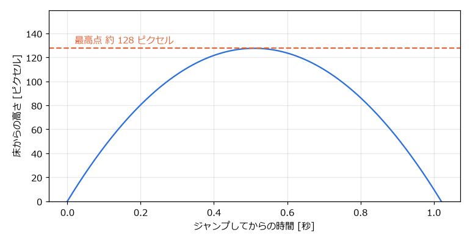
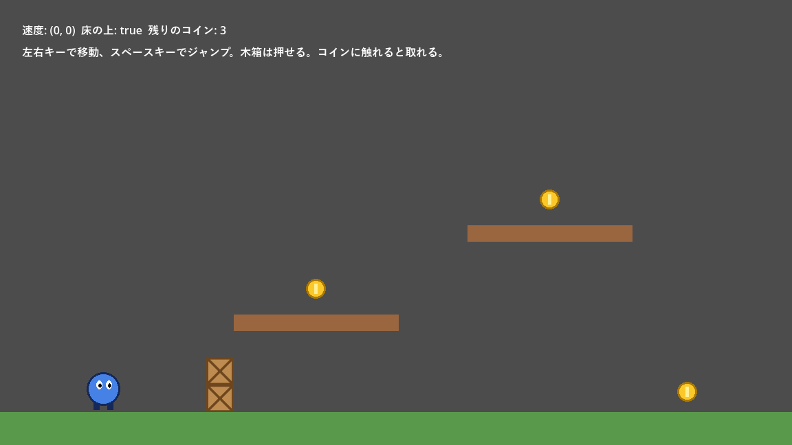

第 11 章 2D の物理と衝突
キャラクターが床の上を歩く、壁にぶつかって止まる、アイテムに触れると取れる。こうした処理には、物体どうしの衝突判定が必要になる。本章では、Godot の 2D 物理演算の仕組みと、物体の種類ごとの使い分けを説明する。サンプルは chapter11 フォルダーにある。
物理ボディの種類
Godot では、衝突判定に参加する物体をノードの種類で区別する。2D では次のノードを使う。
ノード |
動き方 |
使用例 |
|---|---|---|
|
動かない。ほかの物体がぶつかると止められる。 |
床、壁、地形 |
|
スクリプトで速度を決めて動かす。ぶつかったら止まったり滑ったりする。 |
プレイヤー、敵キャラクター |
|
物理演算（重力、衝突の反発、摩擦）に従って動く。スクリプトでは力を加えて動かす。 |
木箱、ボール、転がる岩 |
|
アニメーションやスクリプトで動かす。上に乗った物体を一緒に運ぶ。 |
動く床、エレベーター |
|
物体を止めない。ほかの物体が入ったこと、出たことを検出する。 |
アイテム、ダメージを受ける範囲、ゴール地点 |
StaticBody2D、CharacterBody2D、RigidBody2D、AnimatableBody2D をまとめて物理ボディ（physics body）と呼ぶ。物理ボディどうしはぶつかると互いにすり抜けない。Area2D は「領域」であり、すり抜けるが、重なったことを知らせる。
衝突形状
物理ボディと Area2D は、それだけでは形を持たない。子ノードとして CollisionShape2D を追加し、その「シェイプ」（shape）に形状のリソースを設定して、当たり判定の形を決める。
形状 |
用途 |
|---|---|
|
長方形。床、壁、箱 |
|
円。ボール、コイン、弾 |
|
カプセル（長方形の両端が半円）。角に引っかかりにくいので、人型のキャラクターによく使う。 |
|
線分 |
|
凸多角形 |
多角形の形状を描きたい場合は、CollisionShape2D の代わりに CollisionPolygon2D を使い、ビューポート上で頂点をクリックして形を作ることもできる。
当たり判定の形は、見た目の画像と完全に一致させる必要はない。むしろ、画像より少し小さめにしておくと、プレイヤーが「当たっていないのに当たった」と感じる理不尽さを減らせる。
警告
物理ボディや衝突形状のノードの「スケール」（scale）を変えて大きさを調整してはいけない。特に縦と横で異なる拡大率にすると、衝突判定が正しく動かないことがある。大きさは、形状のリソースの「サイズ」（size）や「半径」（radius）で調整する。
実行中に衝突形状を確認するには、エディターの「デバッグ」メニューで「コリジョン形状を表示」をオンにしてから実行する。当たり判定が画面に重ねて表示される。
CharacterBody2D でキャラクターを動かす
CharacterBody2D は、プレイヤーのように思いどおりに動かしたい物体に使う。velocity プロパティに速度を設定し、move_and_slide() を呼ぶと、その速度で移動する。途中で壁や床にぶつかると、ぶつかった面に沿って滑るように動く。
サンプルの chapter11/player.tscn は、横スクロールアクションの基本的なプレイヤーである。
1extends CharacterBody2D
2## 横スクロールアクションの基本的なプレイヤー操作。
3## 左右移動、重力、ジャンプを行い、ぶつかった木箱を押す。
4
5const SPEED: float = 300.0 # 左右の移動速度 [ピクセル/秒]
6const JUMP_VELOCITY: float = -500.0 # ジャンプの初速。画面の上方向は Y がマイナス
7const PUSH_FORCE: float = 40.0 # 木箱を押す強さ
8
9# プロジェクト設定の重力（既定値は 980 ピクセル/秒²）を使う。
10var gravity: float = ProjectSettings.get_setting("physics/2d/default_gravity")
11
12
13func _physics_process(delta: float) -> void:
14 # 空中にいる間は重力で下向きに加速する。
15 if not is_on_floor():
16 velocity.y += gravity * delta
17
18 if Input.is_action_just_pressed("jump") and is_on_floor():
19 velocity.y = JUMP_VELOCITY
20
21 var direction := Input.get_axis("move_left", "move_right")
22 velocity.x = direction * SPEED
23
24 # velocity に従って移動し、壁や床に当たったら沿うように滑らせる。
25 move_and_slide()
26 _push_rigid_bodies()
27
28
29## 移動中にぶつかった RigidBody2D に力を加えて押す。
30func _push_rigid_bodies() -> void:
31 for i in get_slide_collision_count():
32 var collision := get_slide_collision(i)
33 var body := collision.get_collider() as RigidBody2D
34 if body != null:
35 body.apply_central_impulse(-collision.get_normal() * PUSH_FORCE)
_physics_process() の中で、次の順に処理している。
床の上にいなければ（
is_on_floor()がfalseなら）、重力によって下向きの速度を増やす。床の上でジャンプのアクションが押されたら、上向き（Y がマイナス）の速度を与える。
左右の入力に応じて、横向きの速度を決める。
move_and_slide()で移動する。ぶつかった
RigidBody2D（木箱）があれば、押す。
is_on_floor() は、直前の move_and_slide() で床に接していたかを返す。どの面を床とみなすかは「上方方向」（up_direction）プロパティで決まり、既定では画面の上向き（Vector2.UP）である。同様に、is_on_wall()、is_on_ceiling() で壁や天井との接触を判定できる。
move_and_slide() は delta を引数に取らない。速度に経過時間を掛ける計算は、move_and_slide() の内部で行われる。一方、重力で速度を変える計算（加速度 × 時間）は自分で delta を掛ける必要がある。
ジャンプの高さ
重力加速度を \(g\)、ジャンプの初速を \(v_0\) とすると、ジャンプしてから \(t\) 秒後の高さ \(h\) は、等加速度運動の式で表される。
最高点の高さは \(h_{\max} = \dfrac{v_0^2}{2g}\) である。サンプルでは \(g = 980\)、\(v_0 = 500\) なので、最高点は約 128 ピクセルになる。実際の計算はフレームごとに少しずつ行われるので、この値よりわずかに低くなる。


図 19 ジャンプしてからの高さの変化（g = 980、v0 = 500 の場合）
高く跳ばせたい場合は初速を大きくし、ふわっとした動きにしたい場合は重力を小さくする。重力の既定値は、プロジェクト設定の「物理」→「2D」にある「デフォルト重力」（physics/2d/default_gravity）で 980 ピクセル/秒² に設定されている。
衝突の情報を調べる
move_and_slide() の後で get_slide_collision_count() と get_slide_collision(i) を使うと、移動中にぶつかった相手と、ぶつかった面の向き（法線）を取得できる。player.gd の _push_rigid_bodies() では、ぶつかった相手が RigidBody2D なら、法線と反対向きに力を加えて押している。
RigidBody2D
RigidBody2D は、物理演算に任せて動かす物体である。重力で落ち、ほかの物体にぶつかると跳ね返ったり転がったりする。インスペクターで「質量」（mass）、重力の効き具合（gravity_scale）、摩擦と反発の強さ（「物理マテリアルのオーバーライド」）などを設定できる。
RigidBody2D の position を毎フレーム書き換えると、物理演算と矛盾して不自然な動きになる。動かしたい場合は、力を加える。
メソッド |
内容 |
|---|---|
|
瞬間的な力（撃力）を加える。ジャンプ、爆発で吹き飛ぶなど |
|
継続的な力を加える。毎フレーム呼んで、エンジンの推進力などを表す。 |
|
回転させる瞬間的な力を加える。 |
Area2D
Area2D は、ほかの物体が領域に入ったり出たりしたことを、シグナルで知らせる。
シグナル |
発行されるタイミング |
|---|---|
|
物理ボディが領域に入ったとき |
|
物理ボディが領域から出たとき |
|
ほかの |
|
ほかの |
第 5 章 ノードとシーン のコインは Area2D で、body_entered シグナルで触れた物体を受け取り、それがプレイヤーなら自分を削除していた。今どの物体が領域内にあるかは、get_overlapping_bodies() で取得することもできる。
コリジョンレイヤーとマスク
ゲームには、「プレイヤーはコインに触れるが、敵はコインに触れない」「敵の弾は敵自身には当たらない」といった決まりがある。これを実現するのが、コリジョンレイヤー（collision layer）とコリジョンマスク（collision mask）である。
レイヤー：自分がどのグループに属するか
マスク：どのグループの相手を検出するか
物体 A のマスクに物体 B のレイヤーが含まれていれば、A は B を検出する。レイヤーは 1 ～ 32 の番号で、インスペクターの「コリジョン」の項目で、番号のマスを押して選ぶ。番号には、プロジェクト設定の「レイヤー名」→「2D物理」で名前を付けられる。
サンプルプロジェクトでは、次のように名前を付けて使っている。
番号 |
名前 |
属する物体 |
|---|---|---|
1 |
world |
床、壁、地形、木箱 |
2 |
player |
プレイヤー |
3 |
enemy |
敵、障害物（第 17 章 チュートリアル：岩よけゲームを作る の岩） |
4 |
item |
コイン |
物体 |
レイヤー |
マスク（検出する相手） |
|---|---|---|
プレイヤー（ |
2（player） |
1（world） |
木箱（ |
1（world） |
1（world）、2（player） |
コイン（ |
4（item） |
2（player） |
プレイヤーのマスクは world だけなので、プレイヤーは床や木箱にはぶつかるが、コインにはぶつからずに通り抜ける。一方、コインのマスクは player なので、コインはプレイヤーが入ってきたことを検出できる。
シーンファイルやスクリプトでは、レイヤーは各番号を 1 ビットとする整数で表される。番号 \(n\) のビットの値は \(2^{n-1}\) で、coin.tscn の collision_layer = 8 は番号 4 を表す。スクリプトで設定する場合は、set_collision_mask_value(4, true) のように番号で指定するメソッドを使うと分かりやすい。
サンプル
platformer.tscn は、ここまでの内容をまとめたサンプルである。プレイヤーを左右に動かしてジャンプし、木箱を押し、コインを集められる。
図 20 platformer.tscn のノードの構成


図 21 platformer.tscn の実行結果
床や台は、StaticBody2D の子として CollisionShape2D（当たり判定）と ColorRect（見た目の長方形）を置いている。コインは 第 5 章 ノードとシーン の coin.tscn をそのままインスタンス化し、coins グループに追加している。画面上部の表示は、親の platformer.gd が毎フレーム更新している。
1extends Node2D
2## 物理と衝突のサンプルの画面表示を更新する。
3
4@onready var _player: CharacterBody2D = $Player
5@onready var _info: Label = $Info
6
7
8func _process(_delta: float) -> void:
9 var coins_left := get_tree().get_nodes_in_group("coins").size()
10 _info.text = (
11 "速度: (%.0f, %.0f) 床の上: %s 残りのコイン: %d"
12 % [_player.velocity.x, _player.velocity.y, _player.is_on_floor(), coins_left]
13 )